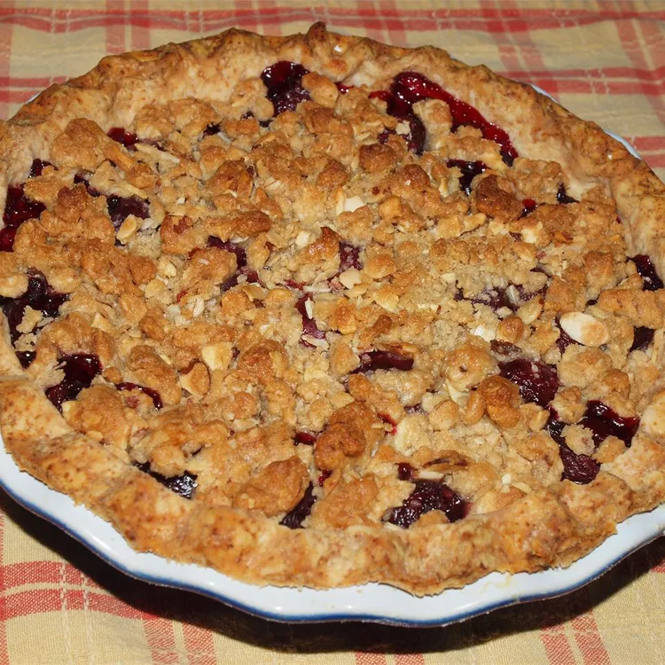
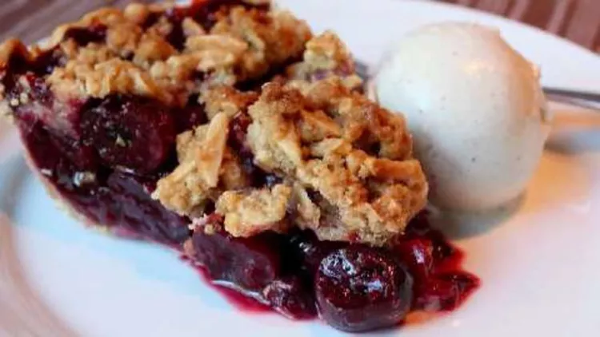

Cherry Pie
Main page
Description
Cherry Pie with Almond Crumb Topping

How to make cherry-pie-with-almond-crumb-topping
Making cherry-pie can be time-consuming, but the results are well worth the wait.
You'll find a detailed ingredient list and step-by-step instructions
in the recipe below, but let's go over the basics:
Ingredients
these are the ingredients you'll need to add to your grocery list:
- 1 1 (9 inch) unbaked pie crust
- ½ cup slivered almonds
- ½ cup light brown sugar
- 1⅓ cup all-purpose flours
- ¾ teaspoon salt
- 6 tablespoons cold, unsalted butter, cut into pieces
- 2 pounds cherries, pitted
- ½ lemon, juiced
- ⅓ cup white sugar, or more to taste
- ¼ cup cornstarch
Step-By-Step
Here's a very brief overview of what you can expect when you make cherry-pie:
- Preheat oven to 350 degrees F (175 degrees C). Line a baking sheet with aluminum foil.
- Roll out pie crust and lay into a 9-inch pie pan
- Combine almonds, brown sugar, oats, flour, and salt in a large bowl.
Work butter into the almond mixture with your fingers, breaking up any large pieces,
until incorporated completely. Cover and chill for 15 minutes.
- Combine cherries, lemon juice, white sugar, and cornstarch.
Stir until well coated and no dry lumps remain, 3 to 4 minutes.
- Pour cherries and any accumulated juices into the prepared pie pan.
Press down into the pan. Crumble oat mixture over the top.
Place the pan on the prepared baking sheet.
- Bake in the preheated oven until cherries are bubbling and the crust and crumble topping are browned,
about 1 hour 15 minutes. Let cool completely.
